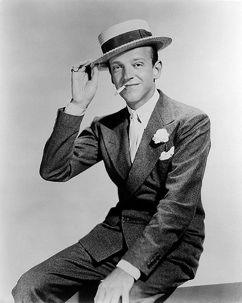

TAP
Tap. The fusion of multiple ethnic dances; Spanish flamenco, Africian tribal dances, English clog dancing and Irish jigs. Tap dance is a type of dance characterized by using the sounds of tap shoes striking the floor as a form of percussion. The sounds are made from the metal on the heel and toe of the tap shoe or the "taps". Syncopation is frequently used in tap dances and the choreography typically starts on the eighth or first beatcount. Tap dancer Fred Astaire gave a more ballroom look to tap and Gene Kelly often incorparated ballet. Common tap steps include shuffles (and many shuffle variants like shuffle ball change), flap, cramproll, buffalo, maxiford, pickups, wings, drawbacks, time-steps, chugs, riffs, digs, scuffs, brushes, stamps, and paradiddles.
Learn how to do cramprolls at the bottom of the page.
Fred Astaire
Fred Astaire was an American tap dancer extraordinaire. Frederick Austerlitz was born on May 10, 1899 in Omaha, Nebraska. Fred and his older sister, Adele Astaire, were brought to New York as children to receive dance training and perform on vaudeville stages. Tap challenge numbers were danced with Rogers, as well as with his other partners. With Rogers Powell especially, these numbers, based on minstrel formats, presented an alternating series of tap flurries, each dancer trying to best the other. In the “Let Yourself Go” number from Follow the Fleet, the Astaire-Rogers competition is set in a dance hall with “real” inter-couple competitions. The solos occasionally had a “schtik,” such as the “fireworks dance” in Holiday Inn, but more frequently were danced alone before a camera. It would be difficult to overestimate Astaire’s influence. He represents tap, theater, and ballroom dance to much of the world.